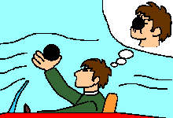
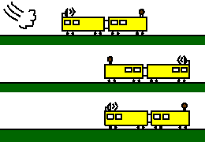

最終更新日 2000年2月1日
ここでは特殊、一般、と２つある相対論のうちの簡単な方、
特殊相対性理論についての、ちょっとしたウソやインチキも交えながらの解説です。
これで納得できれば良し、納得できない場合はちゃんとした本でも読んで下さい。
というわけで、その１、はじまりはじまりー。
ガリレオ・ガリレイが（たぶん）最初に提案しました。
「もし地球が回っているのなら、なぜ我々にそのことが感じられないのだ？」
と質問されて、

「動いている船の上で、玉を落としてみよ。その玉はまっすぐ下へ落ちるだろう。」
てなことを答えたわけです（本当はどう言ったか知りませんけど）。
つまり、船が動いていても、止まっていても玉の動きは変わらない。
だから我々には動いているか、止まっているかを区別できない、ということです
（ただし、条件があって、同じ方向に同じ速さで動いている場合に限ります）。
これを「ガリレオの相対性原理」と言います。
これは納得できるでしょう。電車の中でジャンプしても、電車だけが先に行って 後に残されるということはありません。 もしかしたら、それは電車の中の空気も一緒に動いているからだ、と考える人も いるかもしれません。そういう人はオープンカーに乗って（ジャンプは危険なので）、 手を伸ばして鉄の玉（重いほど良い）を落としてみればわかります。 けっして顔にめり込んだりせず、足元に落ちることがわかるでしょう。
じゃあ、鉄の玉を落とせばいつでも真下に落ちるように見えるかというと、
そういうわけではありません。電車の中から踏み切りの横に立っている人が
落とす鉄の玉を見てみると、きっと斜めに落ちるように見えるでしょう
（雨の日に電車に乗ると、雨粒が斜めに降るように見えるのと同じ）。
逆に電車の中で真下に落ちる鉄の玉は、地上からは斜めに落ちるように
見えます。右の図はヨットのマストの先から鉄の玉を落としている風景を、
地上から見たものです。こんな感じで斜めに落ちるように見えるわけです。
本当は真っ直ぐに斜めになるのではなくて、少し曲がって落ちます。
このカーブを放物線と言います。
まっすぐ落ちている玉を電車から見ると、斜めに落ちるように見えるのは、 そりゃ電車が走っているからに決まっています。電車が時速60kmで走れば、 外の人や風景、もちろん鉄の玉も、後ろ向きに時速60kmで過ぎ去るように 見えます。これが相対速度です。線路が２本あって、同じ方向に同じ速さで ２台の電車が走っていると、相手の電車は止まっているように見えます。 逆に、２台の電車が反対方向に走っていると、相手の電車が２倍の速さで 走ってくるように見えます。つまり、速度は足し算、引き算ができるわけです。
さて、ここで問題です。あなたが電車に乗っている時に、もし隣の線路を 走っている（どっち向きでも良いです）電車しか見えなかったとしたら （もちろん窓も開けられず、風景も見えない）、あなたは電車が走っているか どうか判断できるでしょうか？ そりゃ、ガタゴトいうからわかるに 決まっていますが、そういうことはなしにします。例を変えるのなら、 宇宙船に乗っていることにしましょう。暗黒星雲の中で星が見えない時、 すれ違う宇宙船があったとして、それでもって自分が動いているのか、 相手が動いているのか、判断できるでしょうか？
なんらかの実験をして判断できるか、考えてみましょう。 石を投げたり、ロケットを吹かすことはできます。ロケットを吹かせば前に 進んだことになるのでしょうか？ いや、もしかしたら本当は宇宙船は バックしていて、ロケットを吹かしたことで単に止まっただけかもしれません。 もちろん、石を投げてもダメなことはわかりますよね。 走っている電車の中で石を落としても、地上と同じように落ちます。 宇宙船の中でやっても同じこと。
電車の場合なら、“もし風が吹いていなければ”、外の空気の風速を計ることで、 電車の速さを決めることができます。つまり、窓の外に風速計を出して風速10mと いう結果が得られたら、電車は時速36kmで走っていることになるわけです。 他にも、音で測る方法があります。電車の外にスピーカーとマイクを 出します。スピーカーから出た音は空気を伝わってマイクに届きます。 音の速さはだいたい秒速340mぐらいです。電車の長さが340mだとして、 止まっている時は先頭のスピーカーから出た音は１秒かかってマイクに届きます。 走っていれば、スピーカーから出た音が空中を伝わっている間にマイクが 近づいて来るので１秒より短い時間でマイクに届きます。もし、0.5秒で届いたのなら 電車の速さは秒速340mということになります。逆に、先頭にマイクがあって 後ろにスピーカーがあると、音がマイクに近づいている間にマイクも先へ進んで 遠ざかるので、１秒より時間がかかります。電車が戦闘機のような超音速で 走っている時は、後ろから出た音はマイクに届きません。
 でも、これには実は落とし穴があって、空気が動いていないことが 必要なのです。電車と同じ方向に強風が吹いていて、同じ速さで空気も動いていたら、 窓から手を出しても何も感じません。きっと止まっていると思うことでしょう。 右の図は音を使って電車の速さを測っている様子を示しています。 電車の長さを1020mとすると、スピーカから出た音は、止まっていれば３秒で マイクに届きます。一番下は２秒で届いているので、音と反対向きに秒速170mで 走っていることがわかります（計算してね）。真ん中のは６秒かかっているので、 音と同じ方向に秒速170mで走っているわけです。ところが、一番上の場合は 右へ秒速170mの風が吹いている場合（空気全体が動いていると考えて下さい）です。 そのため地上からみると、音速が340+170=秒速510mになっているので、やっぱり ２秒で電車の端まで届きます（電車は止まっているのに）。
つまり、空気が止まっているということがわかっていれば、電車の速度も わかります。でも空気がどうなっているかわからなければ、電車の速度も わかりません。何となく、空気や地面（線路）との相対速度は簡単に 測れるけれど、電車の本当の速さはそう簡単には測れない、という感じが してきましたか？ もっと難しそうなのが宇宙船の速さです。 地上では、地面や空気が止まっていると思い込めば、動いているものの速さを 決められるでしょう。では空気のない宇宙では？
宇宙船の外に出てもかまいません。暗黒星雲の中でも外は真空だとします。 なので音は伝わりません。後は何が使えるでしょう？ レーザー光線は光なので真空中でも使えます。波動砲を使っても良いですが、 エネルギーの無駄使いなだけです。
宇宙船の場合なら、音の代わりに真空中でも伝わるレーザー光線を使って、 電車と同じように速さを測れるかもしれません。音と同じように、 レーザーを宇宙船の先頭から出して最後尾で受けます。かかった時間を 測って、宇宙船がどれくらいの速さで動いているかを調べることは できるでしょうか？ 実際に、これと同じような実験がもう地球上で やられています。地球は太陽の周り（半径15,000万km）を一年で１周しているので、 だいたい秒速30kmで動いています。だから進行方向と逆方向では 光の進む速さが違うはずです。
ところが、実際に実験をしてみても、速さの違いはありませんでした。 空気も一緒に動いているからでしょうか？ 真空のパイプの中でやっても 結果は同じです。いろんな人がいろんな場所でいろんな方法でやってみましたが、 速さの違いを調べることができませんでした。ヘンですねえ。 電車と同じように考えれば、光と同じ向きに動いている時は時間が余分にかかって、 逆向きの時は短い時間で届くはずです。ヘンですねえ。
よく考えてみましょう。電車の時には、空気や地面を基準にして電車の速さが わかりました。光は空気のない所も伝わるので、特に基準があるようには見えません。 もし光を使って自分の速さが測れたら、もしかしたらそれが本当の速さになるのかな？ ということは、光の速さが秒速30万kmになったら「本当に」止まっていて、 そうでない時は動いているということになるのかな。てことは、 「ガリレオの相対性原理」の、地球が動いていてもそれは地上では 簡単にはわからない、電車の中で実験をしても電車の速さは測れない、 という主張は間違いで、速さは測れるのかな？ 実は19世紀の科学者は そう考えていました。でも、事実はそうじゃなかったわけです。 なぜか、真空でも伝わる光は基準にできない。それ以外の方法で測った速さは、 いつも何かとの比較でしか測れない相対速度ばかりでした。地上でも宇宙でも 使えるような絶対的な基準は手に入りませんでした。 電車が動いているかどうかは判断できない、動いていても止まっていても そこで起きることは同じだ、という「ガリレオの相対性原理」は正しかったわけです。 この「ガリレオの相対性原理」を、“すべての現象”にまで当てはめたものが、 「アインシュタインの（特殊）相対性原理」です。